Screenwriting has always been a fun activity, but now it can be a fun activity with your friends rather than alone in the corner of a coffee shop! Screenplays are so formulaic that there is an unofficial guide to writing them. “Save the Cat” by Blake Snyder outlines a “beat sheet” that provides writers with a structure to which their story must adhere. I’ve taken this beat sheet, tweaked it a bit, and turned it into a game where you must improvise your own 3 act story.
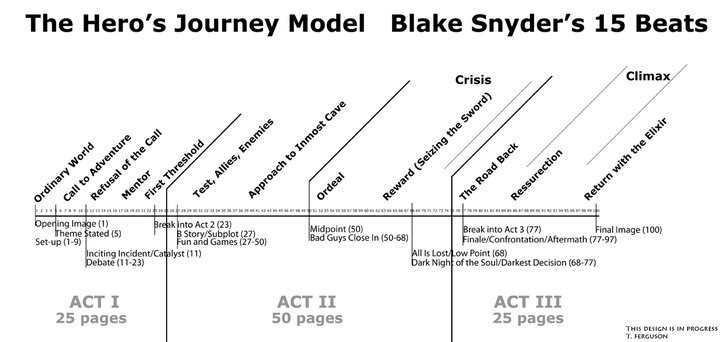What you'll need:
Steps:
When you’re done, your game table should look like this:
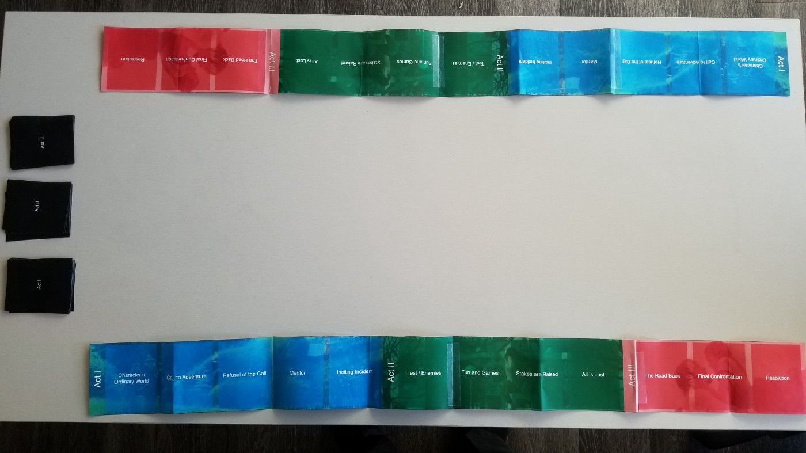Screenwriting: The Game is played between two parties. I’ve found that it’s much more fun to be in teams of two or three, but you may also play with teams of one. Each team gets one of the “storylines.”
Start by taking 4 cards from the “Act I” deck and placing them face up.
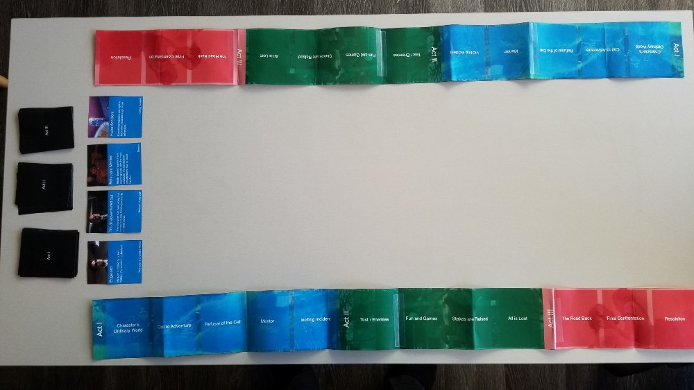Each card contains a Title, Description, and Category. The category corresponds with a place on the player’s storyline.
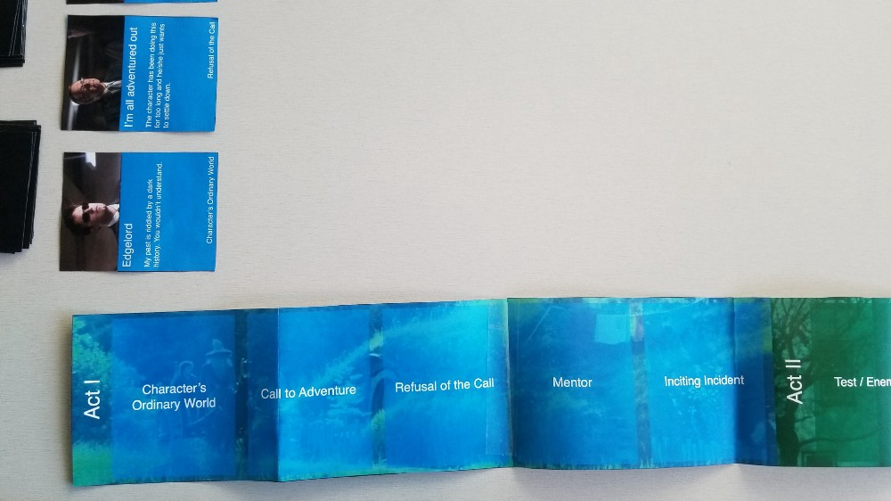When it is a team’s turn, its players may choose one of the four cards to place in a category. Cards do not need to be placed in order.
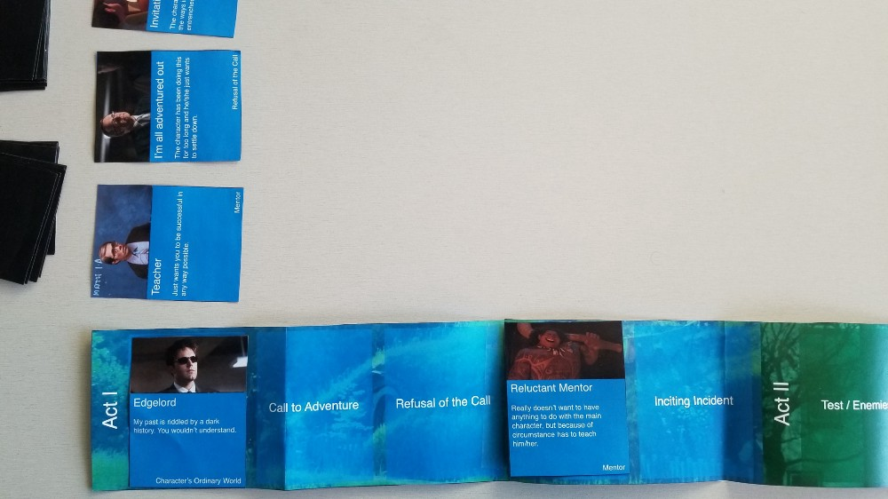A team may also choose to use a turn to “burn” a card by placing it to the side. This may be advantageous as it will prevent the other team from getting that card. After a turn, a new card it taken from the same deck so that the card options are replenished.
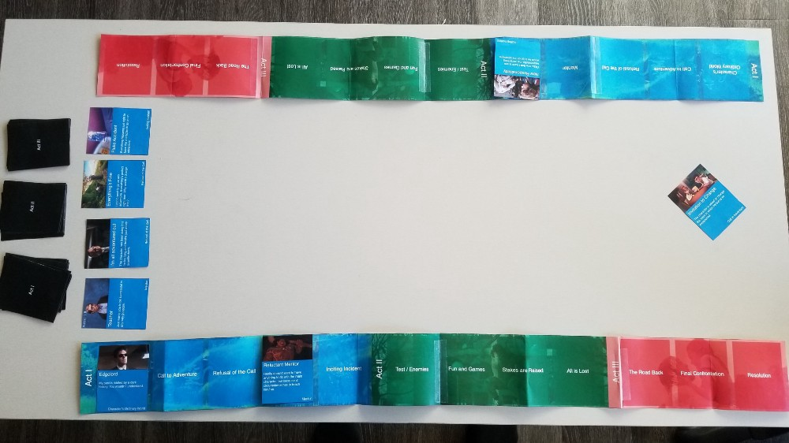A round ends when either both teams have filled up their Acts, or when all cards from the deck are exhausted.
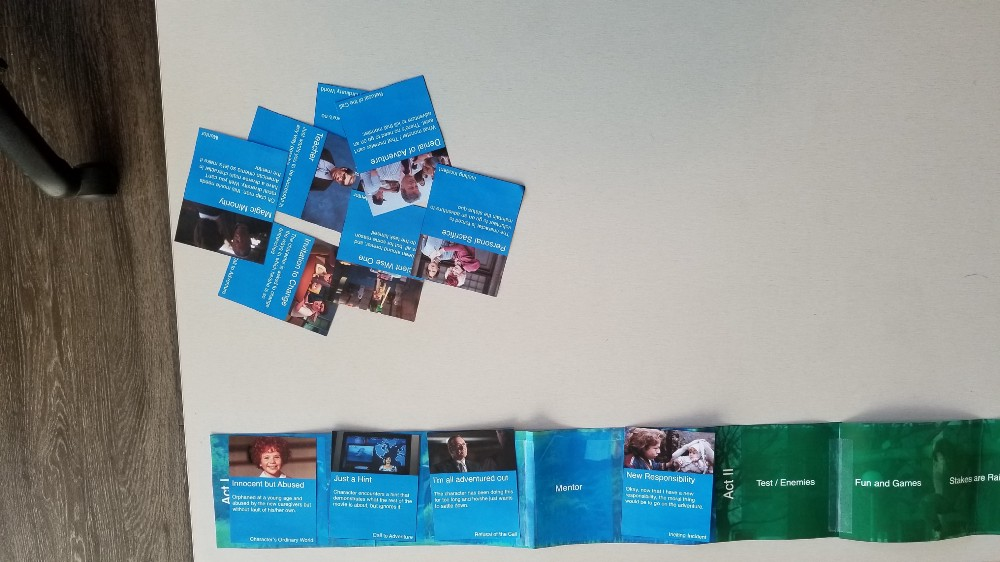If empty slots remain on a team’s storyline, each team takes turns selecting a fitting card from the burn pile and assigning that card to the competing team.
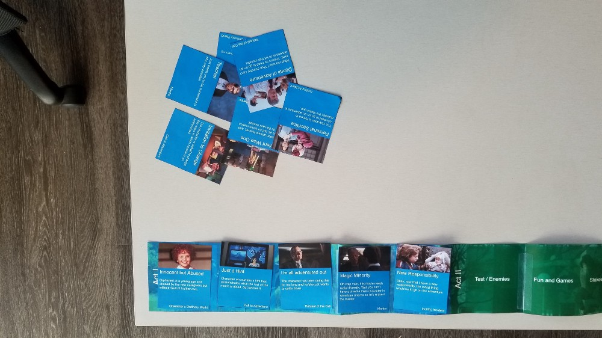Lay four cards out for Act II and repeat the steps above.
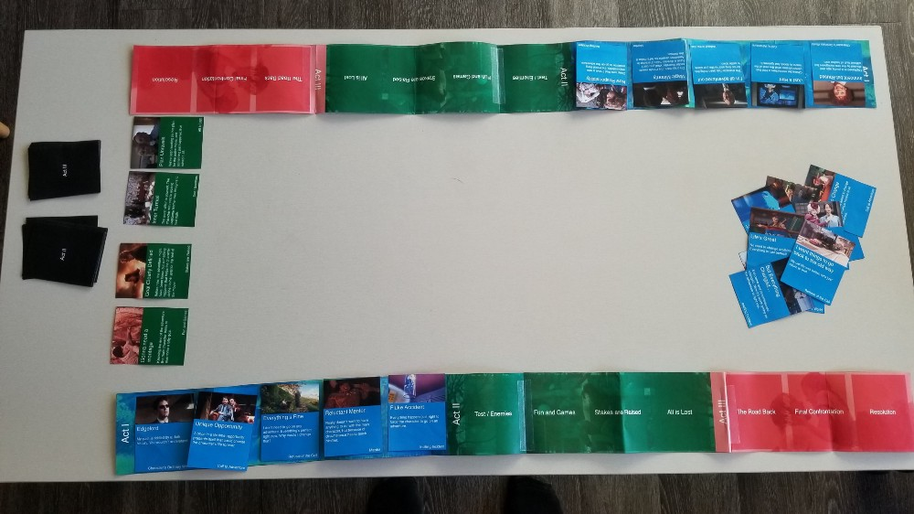Repeat for Act III.
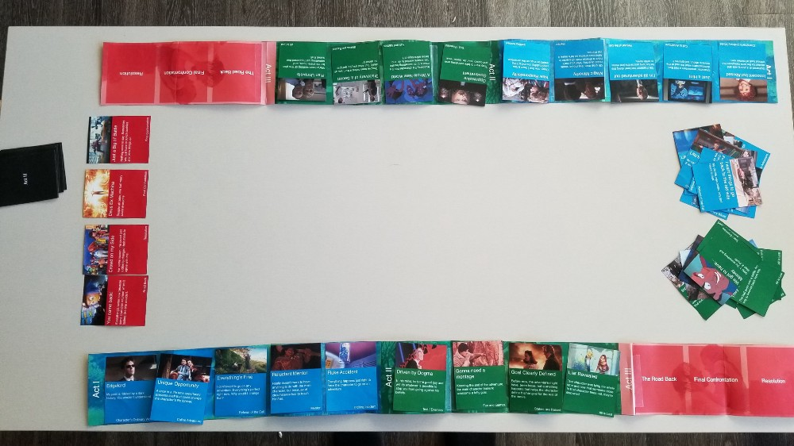Upon completing all Acts, each team must construct a story that follows the tropes they selected for their storyline. This is the most fun part of the game as it takes improv skills and creativity to create a cohesive narrative within the constraints imposed in the prior steps.
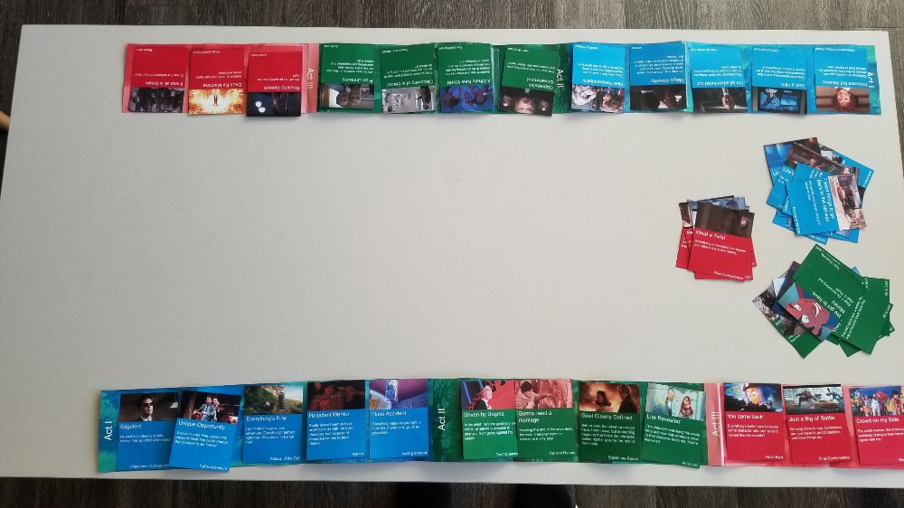Optional: Appoint a neutral judge to determine which team made the better story. This isn’t all that important because the main point of the game is to challenge the creativity of the players.
Have fun! And if you have any suggestions for improving Screenwriting: The Game or more cards tell me on twitter: https://twitter.com/otherJackson